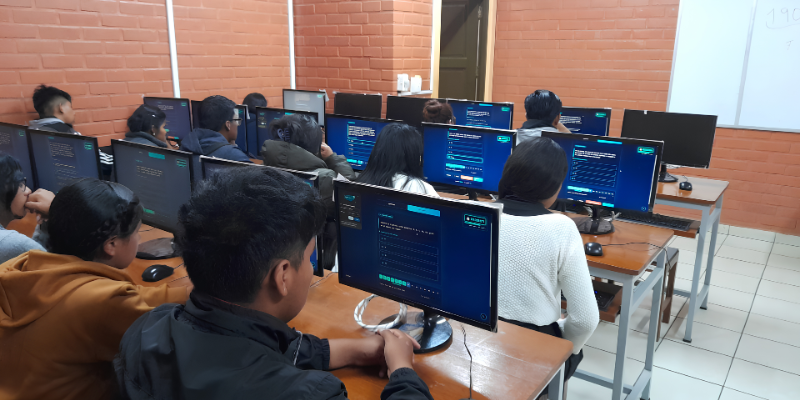
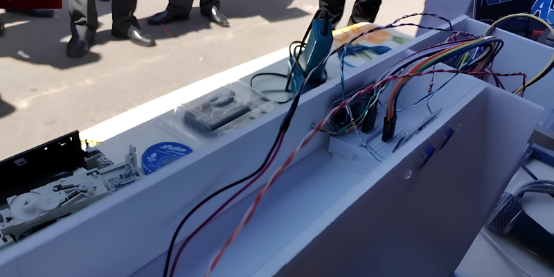
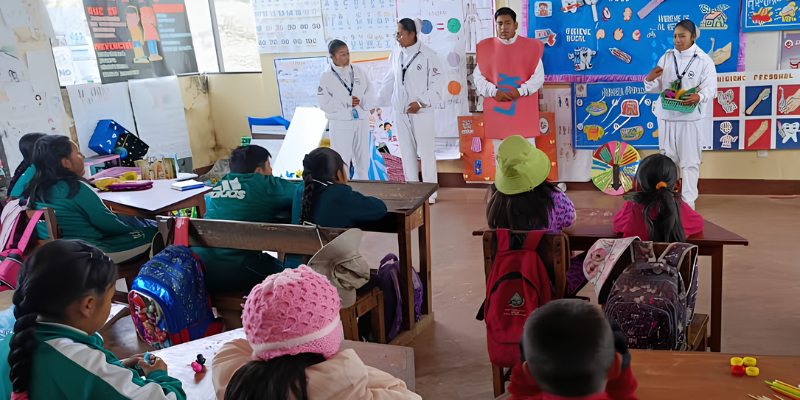
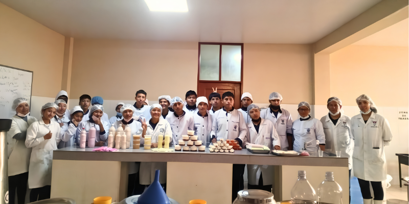

Conoce un poco más sobre nuestras actividades academicas

SistemasLaboratorio Informático BTH
Equipos de computación e internet

RobóticaTaller de Electrónica
Proyectos de automatización Arduino

EnfermeríaAprendizaje de enfermería
Prácticas clínicas y cuidados de pacientes

GastronomíaTaller de Gastronomía
Cocina industrial y nutrición
Sistemas Informáticos
Especialidad BTH
Horarios & Tutorías
Gestión Escolar 2026
Avisos de Dirección
Circulares Urgentes
Ubicación & Contacto
Rio Seco - El Alto

Mensaje de la Dirección General
Dirección Institucional • UE Franz Tamayo Rio Seco
"En esta gestión 2026, renovamos nuestro firme compromiso con la juventud de Rio Seco para brindar una formación integral bajo el modelo de Bachillerato Técnico Humanístico (BTH). Fortalecemos las habilidades socio-productivas de nuestros estudiantes para aportar activamente al desarrollo de El Alto."
Métricas Institucionales 2026
Estudiantes Matriculados
1,240
Especialidades BTH
4
Plantel Docente
58
Acreditación Ministerio de Educación Bolivia